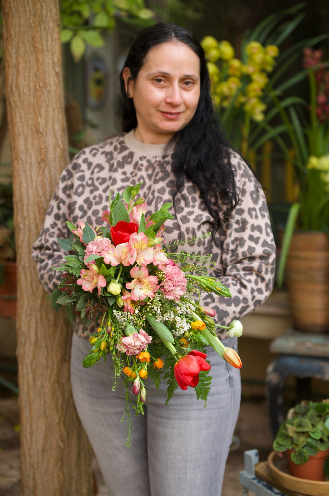

אני אביבית חג'בי, נשואה לשחר ואמא לתאיר, יאיר והילה.
הפרחים הם אהבה שנולדה אצלי בבית ההורים. אבא שלי, אהרון, היה גנן והייתה לו חנות פרחים, "פרחי אביבית". ילדה קטנה הייתי, ובכל יום הייתי לידו, בין הניחוחות והצבעים, בין הרגעים הקסומים שרק פרחים יודעים ליצור.
האהבה הזו ליוותה אותי כל החיים והתעצמה עם השנים. ובדיוק עכשיו היא הפכה לחלום שמתגשם: בוטיק פרחים ייחודי משלי, באשדוד.
בבוטיק שלי אני מביאה את כל האהבה הזו, כדי שכל אירוע, כל מפגש, כל רגע, יהפוך באמת למיוחד ומרגש.
בעולם של זרים מועתקים, אצלי כל זר הוא יצירה חד פעמית, שנולדת מתוך שיחה איתך.
{{ v.text }}
{{ st.text }}
שיחה קצרה, בלי התחייבות ובלי קטלוג. רק להכיר, להבין את הרגע, וליצור יחד.
התחילי שיחה בוואטסאפ ←